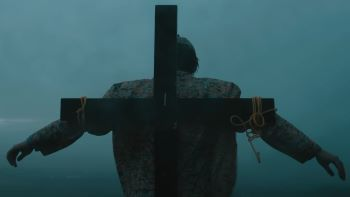

Today, I am reviewing a short film... a very weird short film. The Grucifixion made by Isaac H.P gained TikTok fame about a year ago by essentially reacting to comments and having this explosive personality that was fun to watch. For a year he essentially got views and followers from his comedic videos and fed off of this character that he created on social media. Recently his videos have taken a small turn however as he has started talking about the minions from Despicable Me a little bit too much. This sparked concern among his fans as he even began to paint himself yellow and put on a minion suit while roaming the streets of England. He has been recorded screaming at people and just standing around and all Isaac H.P fans were wondering the same thing, "what happended to Isaac?"

Isaac H.P fans have to wonder no more as he has just released a short film "The Grucifixion" on Youtube. It is less than 15 minutes long however it is a masterpiece. We start the film with Isaac in his classic minion outfit on a train just laughing and we can quickly see impressive cinematography skills from the Tik Toker. We then cut to normal Isaac interviewing minion Isaac in a comedic/deep convarsation. It ends terribly as normal Isaac dissapears and we find out that minion Isaac was just imagining it. Here we begin to pick up that this guy might not be as sane as we think. In the following scene we see this fil really derail and confuse us. Isaac is on a public transportation bus when he spots a girl, he quickly conversates and gets along with the girl thus spurring an emotional intense bit in which the couple gets married, has kids, and witnesses the death of their kid. Bad news for Isaac however, we realize that this story was fake and that he was just staring at this random girl who was creeped out by him. In the next scene we essentially see Isaac break mentally as a creep to the public and cannot find anyone who really wants to be friends with him or even talk to him. In the following scene we see Isaac go into delirium as he transports into a forest with a "minion cross" and carries it up a hill.

We witness the final scene of the film here as Isaac ties himmself to the cross on top of the hill and we get a distanced shot of him just chilling on the hill with no general purpose. I gice The Grucifixion by Isaac H.P a 6/10 rating. Though there are some outstanding shots in this movie and the story line really focuses on mental health and social acceptance and does a good job at that. The purpose and goal of this film is really unknown and up for interpretation which confuses viewers very much. I would say that kids could watch this film due to the heavy themes used not being very prominent parts of the story, however be careful. Overrall for a Youtuber to make this film it was nothing short of a masterpiece and if you are bored one day and want to witness one of the worlds marvels to see, just turn on Isaac H.P - O'Keefegeek